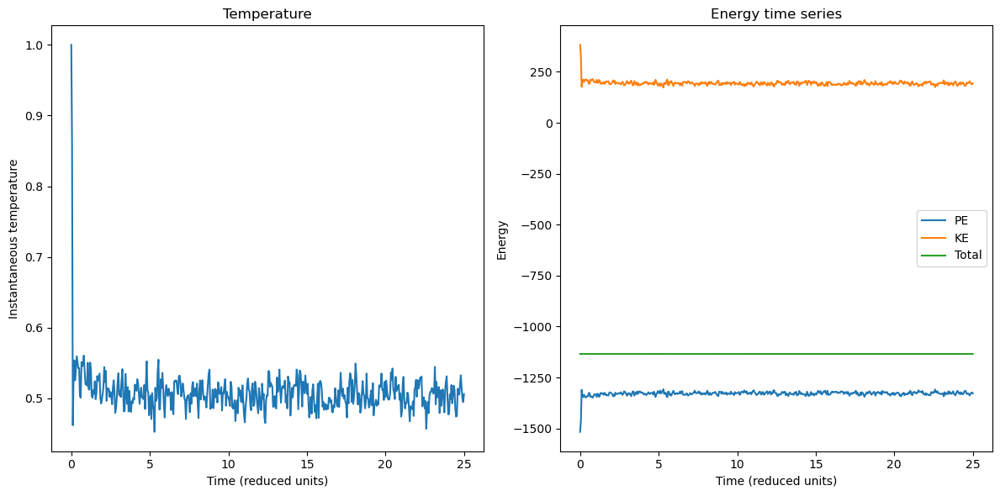
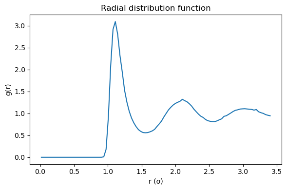
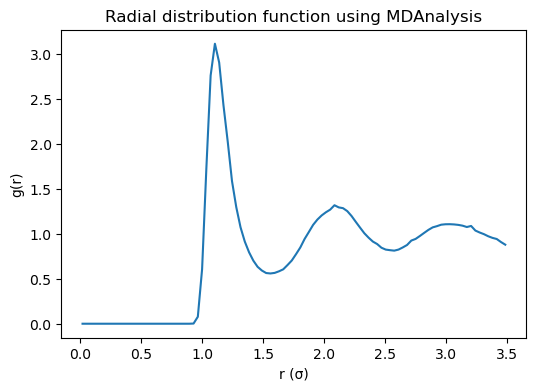
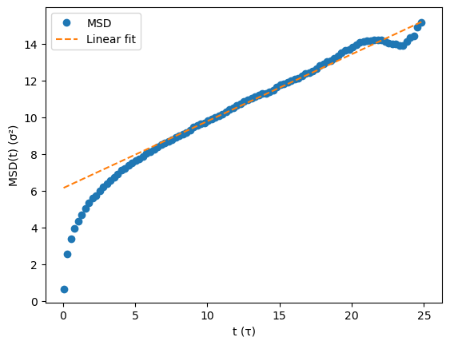

5.4.17. Hands-on Lesson: Molecular Dynamics of a 3D Lennard-Jones Fluid#
This notebook is designed for a computational chemistry course and can be incorporated into a Jupyter Book.
It introduces a simple molecular dynamics (MD) engine for a 3D Lennard-Jones (LJ) fluid and then uses MDAnalysis to compute two standard observables:
The radial distribution function, \(g(r)\)
The mean-squared displacement, \(\mathrm{MSD}(t)\)
From the long-time behavior of the MSD, we estimate the self-diffusion constant,
5.4.17.1. Learning goals#
By the end of this lesson, you should be able to:
simulate a simple LJ fluid in three dimensions with periodic boundary conditions,
control the reduced density and temperature,
understand how LJ reduced units simplify the simulation,
compute and interpret \(g(r)\),
compute the MSD and extract a diffusion constant.
5.4.17.2. Notes#
The MD code below is intentionally simple and optimized for clarity, not speed.
All simulations are done in Lennard-Jones reduced units:
\(m = 1\)
\(\sigma = 1\)
\(\varepsilon = 1\)
\(k_B = 1\)
In these units:
reduced temperature is \(T^* = k_B T / \varepsilon\),
reduced density is \(\rho^* = N\sigma^3/V\),
reduced time is \(t^* = t\sqrt{\varepsilon/(m\sigma^2)}\).
You can also vary \(\varepsilon\) and \(\sigma\) explicitly, but for teaching purposes it is often easiest to think in reduced units.
5.4.17.3. Theory background#
5.4.17.3.1. The Lennard-Jones pair potential#
For a pair of particles separated by distance \(r\),
The \(r^{-12}\) term models short-range repulsion.
The \(r^{-6}\) term models dispersion attraction.
In this notebook we use a cutoff \(r_c\) to truncate the potential. We also use a shifted potential so that \(U(r_c)=0\).
5.4.17.3.2. Periodic boundary conditions#
To mimic a bulk fluid, particles move inside a cubic box of side length \(L\), and interactions are computed using the minimum image convention.
5.4.17.3.3. Radial distribution function#
The radial distribution function \(g(r)\) describes how particle density varies with distance from a reference particle. For an ideal gas, \(g(r) \approx 1\) at all \(r\) (away from finite-size effects). For a liquid, \(g(r)\) shows structure such as coordination shells.
5.4.17.3.4. Mean-squared displacement#
The MSD is defined as
At long times in 3D diffusion,
So the diffusion constant is obtained from the slope of the linear regime.
5.4.17.4. Run a simulation#
A good starting point for a simple LJ liquid is:
n_cells = 4→ 256 atomsrho = 0.80temperature = 1.00dt = 0.005No thermostat for an NVE simulation
These values usually produce a liquid-like state in reduced LJ units.
Try changing:
rhoto make the fluid more dilute or more crowded,temperatureto make the fluid more ordered or more mobile,epsilonto effectively strengthen or weaken the interaction scale.
import numpy as np
from lj_fluid_md_class import LennardJonesMD
# I am going to comment out the simulation run for posting purposes
#sim = LennardJonesMD(
# n_cells=4,
# rho=0.8,
# temperature=1.0,
# n_steps=5000,
# dt=0.005,
# thermostat_interval=None, # for NVE
#)
#results = sim.run()
# save the object
#import pickle
#
#with open("sim.pkl", "wb") as f:
# pickle.dump(sim, f)
## Writte the trajectory in pdb and xyz formats
#sim.write_pdb("lj_fluid.pdb")
#sim.write_trajectory("lj_fluid.xyz")
# load the simulation object
import pickle
with open("sim.pkl", "rb") as f:
sim = pickle.load(f)
import matplotlib.pyplot as plt
import numpy as np
fig, axes = plt.subplots(1, 2, figsize=(12, 6))
axes[0].plot(sim.times, sim.temperatures)
axes[0].set_xlabel("Time (reduced units)")
axes[0].set_ylabel("Instantaneous temperature")
axes[0].set_title("Temperature")
axes[1].plot(sim.times, sim.potential_energies, label="PE")
axes[1].plot(sim.times, sim.kinetic_energies, label="KE")
axes[1].plot(sim.times, sim.total_energies, label="Total")
axes[1].set_xlabel("Time (reduced units)")
axes[1].set_ylabel("Energy")
axes[1].set_title("Energy time series")
axes[1].legend()
plt.tight_layout()
plt.show()

5.4.17.5. Optional: view the LJ fluid inside the notebook#
Yes — if nglview is installed, you can view the trajectory directly in the notebook.
A convenient workflow is:
write the PDB and wrapped DCD files,
load them with MDAnalysis,
pass the
Universetonglview.
This is not required for the analysis, but it is very helpful for helping students connect the trajectory file to the particle motion.
#Run this cell if you have MDAnalysis and nglview are installed.
import MDAnalysis as md
import nglview as nv
#
u_view = md.Universe("lj_fluid.pdb", "lj_fluid.xyz")
view = nv.show_mdanalysis(u_view)
view.clear_representations()
view.add_spacefill(radius=0.5)
view.center()
view
5.4.17.6. Compute the radial distribution function#
For a one-component fluid, the idea is:
loop over saved frames,
compute all unique pair distances using the minimum-image convention,
bin those distances into a histogram,
normalize by the ideal-gas number of neighbors expected in each spherical shell.
For shell \([r, r + \Delta r]\), the shell volume is
If the number density is \(\rho = N/V\), then the ideal-gas expectation for the number of neighbors around one particle in that shell is
Because we count each pair only once, the proper normalization for the histogram of unique pairs is
import numpy as np
def minimum_image(rij, box_length):
"""
Apply minimum image convention for a cubic periodic box.
Parameters
----------
rij : ndarray (..., 3)
Displacement vector(s)
box_length : float
Length of cubic simulation box
Returns
-------
rij_min : ndarray (..., 3)
Minimum image displacement(s)
"""
return rij - box_length * np.round(rij / box_length)
def radial_distribution_function(traj, box_length, r_max=None, n_bins=100):
"""
Compute g(r) from a wrapped trajectory of a one-component fluid.
Parameters
----------
traj : (n_frames, N, 3) ndarray
Wrapped coordinates.
box_length : float
Cubic box length.
r_max : float or None
Maximum distance for the RDF. If None, use box_length / 2.
n_bins : int
Number of histogram bins.
Returns
-------
r_centers : (n_bins,) ndarray
Bin centers.
g_r : (n_bins,) ndarray
Radial distribution function.
counts : (n_bins,) ndarray
Raw pair counts accumulated over all frames.
"""
traj = np.asarray(traj)
n_frames, n_atoms, _ = traj.shape
volume = box_length**3
number_density = n_atoms / volume
if r_max is None:
r_max = box_length / 2.0
edges = np.linspace(0.0, r_max, n_bins + 1)
counts = np.zeros(n_bins, dtype=float)
for frame in traj:
for i in range(n_atoms - 1):
rij = frame[i + 1:] - frame[i]
rij = minimum_image(rij, box_length)
distances = np.linalg.norm(rij, axis=1)
hist, _ = np.histogram(distances, bins=edges)
counts += hist
shell_volumes = (4.0 / 3.0) * np.pi * (edges[1:]**3 - edges[:-1]**3)
normalization = 0.5 * n_frames * n_atoms * number_density * shell_volumes
g_r = counts / normalization
r_centers = 0.5 * (edges[:-1] + edges[1:])
return r_centers, g_r, counts
r_custom, g_custom, counts_custom = radial_distribution_function(
sim.wrapped_traj,
box_length=sim.box_length,
r_max=sim.box_length / 2.0,
n_bins=100,
)
plt.figure(figsize=(6, 4))
plt.plot(r_custom, g_custom)
plt.xlabel("r (σ)")
plt.ylabel("g(r)")
plt.title("Radial distribution function")
plt.tight_layout()
plt.show()

Can also use MDAnalysis InterRDF to compute this
import MDAnalysis as mda
from MDAnalysis.analysis.rdf import InterRDF
import matplotlib.pyplot as plt
from MDAnalysis.transformations.boxdimensions import set_dimensions
u = mda.Universe("lj_fluid.pdb", "lj_fluid.xyz")
# Need to add box information to trajectory
u.trajectory.add_transformations(
set_dimensions(np.array([sim.box_length, sim.box_length, sim.box_length, 90.0, 90.0, 90.0], dtype=np.float32))
)
# all particles
atoms = u.atoms
rdf = InterRDF(
atoms,
atoms,
nbins=100,
range=(0.0, 3.5),
norm="rdf",
exclusion_block=(1, 1),
)
rdf.run()
r = rdf.results.bins
g_r = rdf.results.rdf
plt.figure(figsize=(6, 4))
plt.plot(r, g_r)
plt.xlabel("r (σ)")
plt.ylabel("g(r)")
plt.title("Radial distribution function using MDAnalysis")
plt.show()
/opt/anaconda3/lib/python3.12/site-packages/MDAnalysis/analysis/base.py:542: UserWarning: Reader has no dt information, set to 1.0 ps
self.times[idx] = ts.time

5.4.17.6.1. Interpreting \(g(r)\)#
Small (r): \(g(r) \approx 0\) because the repulsive core excludes close contacts.
First peak: most probable nearest-neighbor distance.
Oscillations: liquid-like short-range order.
Long range: \(g(r) \to 1\) for a homogeneous fluid.
5.4.17.7. Compute the MSD#
For the MSD, the unwrapped trajectory is important because particles may cross the periodic boundaries many times during the simulation.
import numpy as np
def compute_msd(unwrapped_traj, max_lag=None):
"""
Compute the mean-squared displacement MSD(t) from an unwrapped trajectory.
Parameters
----------
unwrapped_traj : ndarray, shape (n_frames, n_particles, 3)
Particle positions as a function of time, using unwrapped coordinates.
max_lag : int or None, optional
Maximum time lag (in frames) to include. If None, uses n_frames - 1.
Returns
-------
lags : ndarray, shape (n_lags,)
Lag times in units of frames.
msd : ndarray, shape (n_lags,)
Mean-squared displacement for each lag.
"""
unwrapped_traj = np.asarray(unwrapped_traj)
n_frames, n_particles, dim = unwrapped_traj.shape
if dim != 3:
raise ValueError("Trajectory must have shape (n_frames, n_particles, 3).")
if max_lag is None:
max_lag = n_frames - 1
max_lag = min(max_lag, n_frames - 1)
lags = np.arange(1, max_lag + 1)
msd = np.zeros(max_lag, dtype=float)
for lag in lags:
disp = unwrapped_traj[lag:] - unwrapped_traj[:-lag]
sq_disp = np.sum(disp**2, axis=2) # shape: (n_origins, n_particles)
msd[lag - 1] = np.mean(sq_disp)
return lags, msd
def estimate_diffusion_constant(times, msd, fit_start_fraction=0.5, fit_end_fraction=1.0):
"""
Fit the linear regime of the MSD and return the slope and diffusion constant.
Parameters
----------
times : ndarray
Time points.
msd : ndarray
Mean-squared displacement values.
fit_start_fraction, fit_end_fraction : float
Fractions of the trajectory used for the fit.
Returns
-------
slope : float
diffusion_constant : float
intercept : float
mask : ndarray of bool
Mask indicating the fit region.
"""
n = len(times)
i0 = int(fit_start_fraction * n)
i1 = int(fit_end_fraction * n)
x = times[i0:i1]
y = msd[i0:i1]
slope, intercept = np.polyfit(x, y, 1)
diffusion_constant = slope / 6.0
mask = np.zeros(n, dtype=bool)
mask[i0:i1] = True
return slope, diffusion_constant, intercept, mask
lags, msd = compute_msd(sim.wrapped_traj)
time = lags * sim.dt * sim.sample_every
slope, D, intercept, _ = estimate_diffusion_constant(time, msd, fit_start_fraction=0.2, fit_end_fraction=1.0)
print(f"Estimated D = {D:.5f} σ²/τ (LJ reduced units)")
plt.plot(time[::5], msd[::5], 'o', label="MSD")
plt.plot(time, slope*time + intercept, "--", label="Linear fit")
plt.xlabel("t (τ)")
plt.ylabel(r"MSD(t) (σ²)")
plt.legend()
plt.show()
Estimated D = 0.06078 σ²/τ (LJ reduced units)

Can also be done using MDAnlsysis EinsteinMSD
# Uncomment and run this cell to use MDAnalysis MSD/D calculation
# import MDAnalysis as md
# from MDAnalysis.analysis.msd import EinsteinMSD
# u_msd = md.Universe("lj_topology.pdb", "lj_unwrapped.dcd")
# msd_analysis = EinsteinMSD(u_msd, select="all", msd_type="xyz", fft=False)
# msd_analysis.run()
# msd = msd_analysis.results.timeseries
# times = results["times"]
# slope, D, intercept, fit_mask = estimate_diffusion_constant(
# times, msd, fit_start_fraction=0.5, fit_end_fraction=1.0
# )
# plt.figure(figsize=(6, 4))
# plt.plot(times, msd, label="MSD(t)")
# plt.plot(times[fit_mask], slope * times[fit_mask] + intercept, "--", label=f"Linear fit, D = {D:.4f}")
# plt.xlabel("Time (reduced units)")
# plt.ylabel("MSD")
# plt.title("Mean-squared displacement")
# plt.legend()
# plt.tight_layout()
# plt.show()
# print(f"Estimated diffusion constant D = {D:.6f} (reduced units)")
5.4.17.8. Hands-on Assignment#
Knowledge check
Why does the temperature drop for the simluation run in the published version of this notebook?
Density dependence
Run simultions at
rho = 0.4,0.8, and1.0.Compute and plot (all on same plot) all three \(g(r)\)s
How do the peak heights and positions change?
Temperature dependence
Compare MSD curves at
temperature = 0.7,1.0, and1.5.How does the diffusion constant change?
Thermostat choice
Run with
thermostat_interval=100and compare with NVE simulation.Does the energy remain approximately constant?